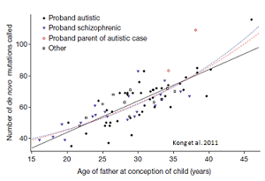
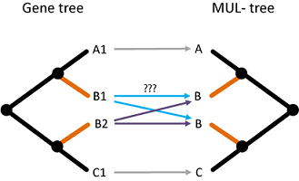
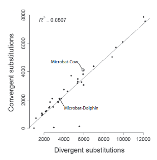

-
Contact
 grthomas@indiana.edu
grthomas@indiana.edu
Hi! I am a fourth year PhD student in the School of Informatics and Computing and the Deparment of Biology at Indiana University under the advisement of Matt Hahn.
I'm excited to work on inferring phylogenies with the vast amount of genomic data that's now available, and working through some of the problems that amount of data has presented. I have worked on detecting convergent evolution on genomic data, modeling mutation rate variation in mammals, and analyzing gene families in a number of species. I helped develop the latest version of CAFE to account for error in gene family analysis, and I developed the program GRAMPA to study polyploidy in the context of gene families. I also have an interest in the biology of extremophiles.
Mutation rate variation

Gene family evolution

Molecular convergence
